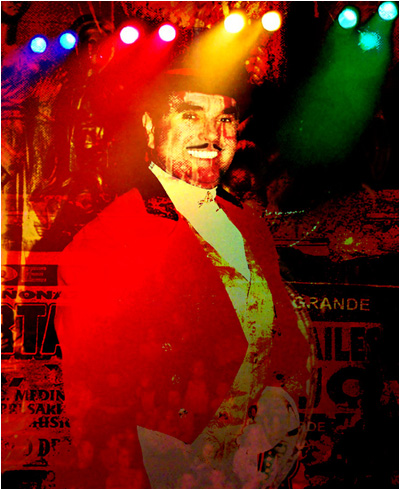
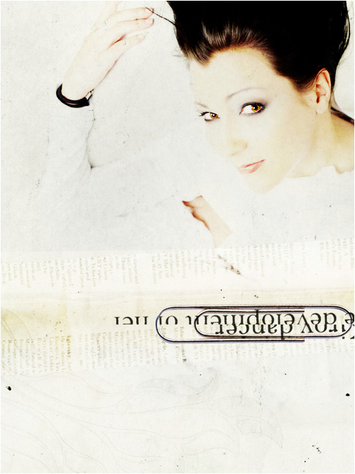
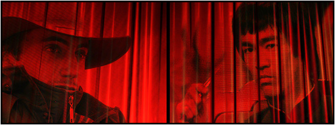

| |
 |
 |
| |
 |
Ден 3 |
|
| |
|
|
Ален Корбин, детектив:
Тука нештата стануваат вистински заплеткани. Мудрите Јарци го почнуваат третиот настап со цитат од „Менаџмент на циркуси“ на Др. Стивен Мајклсон (познат по низа истражувања на експериментални дроги) и крими приказна за еден од пониските актери во Допелгангер – Камшикарот. Информациите што јарците ги изнесуваат тука би требало лесно да се потврдат со српската полиција, но секако, се е под прашалник со балканските офицери и началници. Децата од Гума го негираат целиот исказ, меѓутоа речиси сигурно е дека и тие се замешани. Во продолжение, јарците навестуваат голем, па и крвав, судир меѓу нив и децата. Според анонимни извори, Децата од Гума се разжестиле како лавови по првиот настап на јарците и од тогаш постојано кревале галама низ Допелгангер – покрај новинарката што јарците ја спомнуваат, напаѓале и други минувачи! Но, тоа не е се. Доцна во ноќта меѓу втората и третата вечер низ целиот циркус се слушал истовремено лут и расплакан, дисторзиран шепот, цитирам, „...Што се случува... со тебе, флиперу мој... (каналски / вардарски)? Умри си дома сред вечера... недостасуваш... Умри, дојди... засекогаш... да биде се исто како во 2023-та... И прекини со црвот, прекини, прекини...“ Не може да се одреди полот на личноста. Гатачката вели дека тоа не е ни прв ни последен пат да го слушне тој глас. Мудрите Јарци не го слушнале шепотот, но затоа виделе нешто друго... Исто така, јарците повторно зборуваат за Снегорог, па дали тука има некаква врска или треба да се свртиме кон предвидувањата на Гатачката?
КЛОВНОТ: Дами и господа, можеби знаете што следи, можеби не, но ви гарантирам, со какви очекувања и да влегувате во следнава точка-чудовиште, ништо, ама баш ништо, на светов нема да ве спреми за нај-нај-легендарните Мудри Јарци! (ракоплескање)
ДЕСНИОТ ЈАРЕЦ: Бле-арх... А баш вчера ја пофалив медовината. (аплауз) Знаев дека порано или покасно и неа ќе ни ја упропастат.
ЛЕВИОТ ЈАРЕЦ: (се слуша слаб удар од дрво) Шех. (уште посилен аплауз, се слуша: Го виде ли тоа?) Во ред е, сум пиел и многу полоши, некои со вкус на везувска лава... Можеби им снемало од вчерашната, но што е, тука е. Многу луѓе мислат дека знаат како се менаџираат циркуси, дека ќе соберат куп циркузанти на место, нешто животни, голем шатор и пар половни приколки, и дека после тоа ќе им оди лесно, затоа што тие се паметни, тие знаат. Со сите свои маани, Кловнот знае да биде прилично добар одвреме-навреме. Па и ако понекогаш му снемува од добрата медовина...
Д.Ј.: Додека пасев сабајлево, поминуваа луѓе крај надворешната ограда, изгледаа интересно, љубопитни и апатични во исто време. На глас си збореа, „Уште ли постојат циркуси?“ и се смееја. Го спомнаа „Медрано“... (шепот во публиката) Знаете дека Кловнот порано работел таму на многу кратко пред да стане вистински кловн?
Л.Ј.: Дали постојат циркуси? Минатата година, Стивен Мајклсон објави еден фин текст за Допелгангер по име „Менаџмент на циркуси“ што оди вака некако... „Во потребите на денешните холограмски души... (аплауз) циркусот, тој реликт од патиштата што порано минувале надвор, таа сенка на човечкиот отпор кон можностите на сопственото тело, мора да исчезнува. Веќе не ни требаат лавови, кловнови и акробати, освен како софтверски ликови, па затоа и навикнати сме на циркусот да гледаме како на остаток од поранешните оргии што се губи во некоја правлива датотека...“
Д.Ј.: Да се надоврзам, „...Денес сме дојдени тука да се увериме дека тоа е така, дека циркусот е туѓо тело што се појавило на две секунди за веднаш потоа да исчезне. Од каде нашиот таков однос? Од досада? До некаде да и тоа е нормално. Од изживеаност? И тука, донекаде да. Но, до некаде и од страв, не од лавовите и од мечките (кои ионака ги затворивме по зоолошки и ги ослободивме во дивина иако фатално онеспосебени), туку од самите циркузанти...“
Л.Ј.: „...Замислете си, сред целата таа бучава од зејтин, шеќерна волна и пуканки, серија унгарски Цигани, индиски мистици што јадат змии и локуми за доручек, џуџиња што роварат по нечија потсвест, и еден куп светнати, налицкани очи, трепки, заби, глуждови, пердуви, нокти, тетиви, бради, пудри, сите внесени во нас, меѓу нас, со својата вонземност, со својата радикална туѓост, со нивниот избор да не бидат она што ние сме, со тоа што останале Други...“ Гледам, луѓе ги напуштаат своите седишта. Се надевам само одат во парови, не сакам да пријават уште еден исчезнат, особено со оглед на тоа дека сега Допелгангер и активно бара жртва... Но, каде застанавме?
Д.Ј.: „...Отпрвин можеме и да одбиеме да веруваме во нив, но нивните црвени носеви не касапат во предградијата, не демнат во дневните соби и конечно излегуваат од екранот со моторни пили. (се слуша: Мамо, што е тоа касапат? Даниел, дете, ајде да излеземе, мама ќе ти купи шеќерна волна.) Можеби и не живееме во стаклена градина, туку во еден огромен циркуски шатор? Можеби ние навистина живееме токму во Допелгангер? Но, не е ли малку чудно што во нашиот циркус костимираните и нашминканите убиваат во публиката за да не насмеат, додека циркускиот директор (и самиот некогашен кловн) очајува што публиката се свртила кон себе па заедно со еден мајмун – дијалектички материјалист – чита весници и гледа вести?...“
Л.Ј.: „Тука негде мора да има и був, ама на него во основа му е доволно што си е по страна. Што недостасува во овој циркус без контрола?“ (се слуша: Чеп, да те зачепи...)
Д.Ј.: „Лав. Лав што би рикнал еднаш, така што сите да сфатат дека не се наоѓаат дома или на пазар, туку во циркус. Лав што би скокнал низ огнен обрач, така што сите да сфатат дека дошле да се забавуваат, а не да се плашат. И од каде да набавиме лав што би ја пополнил оваа празнина? Од Африка, од Азија, од Америка? Море, од каде било само да е тука што побрзо. Ако треба и ќе го клонираме.“
Л.Ј.: Таман. (се слуша благ дрвен тресок) Шах-мат. (аплауз, се слуша: Ќе кажам пак, го виде ли тоа?) Ме потсети на интервјуто што го дадовме вчера. „Зошто со вашиот несекојдневен талент се криете во циркус како патувачка атракција? Не ли би биле од многу поголема корист доколку го искористите вашиот интелект за научни цели, за проучување на врската меѓу животните и луѓето?“ На што ти и одговори: „Во циркус и надвор од циркус. Има ли разлика?“ Девојката веднаш крена веѓи: каков претенциозен одговор! Штета не ти ја знае смислата за хумор, инаку би се превиткувала во смеење. Уште поголема штета, наминаа Децата од Гума и скиснати-прекиснати заради некоја причина (можеби затоа што тие не даваа интервју) и го скршија диктафонот. „Немате дозвола за интервју“, и кажаа. Девојката му се пожали на Кловнот кој претходно и даде дозвола што сака да прави со нас, а тој студено и одговори: „Не знам што пинџур зборувате, ве гледам прв пат во мојот кловновски живот. Ако сакате бесплатна Допелгангер мајца, бујрум, одете до штандот и кажете им дека е од Кловнот. А сега, имам работа со Понго делфин-кенгурот.“ Сепак, во циркус и надвор од циркус, ми се допаѓа тоа, иако нејзиното прашање не беше воопшто наивно. Се надевам и на Децата од Гума им се допаѓаат боцките што ти им ги остави по газињата. (непријатна смеа)
Д.Ј.: Не верувам дека научиле некоја битна лекција. Евентуално, дека ако некогаш им светне лампа да прават варијации на тема глупост во наше присуство, би било паметно да имаат некаков мускулест грб... некое врапче ми пее дека и до тоа ќе дојде... Уф, ме потсетија на Самовилата... Да превземевме тогаш нешто, да се разблеевме до Сиднеј или да го објавевме името на вистинскиот убиец на Џ.Ф.К., таа можеби ќе беше тука, во моментов, смеејќи ни се од зад црвената завеса...
Л.Ј.: Не е се готово, јарецу мој меланхоличен. Уште не сме ја начнале лажливата лушпа на вистински тврдиот орев. А додека да стигнеме до неа, прво треба да си ги наостриме роговите со некои помеки ореви како Камшикарот...
Д.Ј.: Вајстина... Како поглед низ задната врата на Допелгангер (и по пат, јас сум со бели сега)... Значи, дами и господа, за животните тука, не знам дали знаете, е задолжено едно безлично суштество наречено Камшикарот. Го видовте на почетокот од нашата точка, човекот со црвена наметка и срамно висок цилиндер што ни донесе медовина. И да не се сеќавате на него, без грижа – потребно е или натчовечко сеќавање или тврдокорно условување за тој да ви остави било каков впечаток. Заради таквата негова безличност, впрочем, тој е човекот што во име на Допелгангер се среќава со локалните полиции околу било какви проблеми: визи, илегални чудесии, патрлоци, шверцувани варани и октоподи, марокански бегалци, украдени лабораториски експерименти ко првата клонирана овца, онаа од 6 години пред Доли, и сл. Камшикарот, знаете, многу лесно си го наоѓа јазикот со полицијата, како што секој човек најлесно зборува во своето огледало.
|
|  |
Л.Ј.: Се случи еднаш во една земја под Дунав, Кловнот да го испрати Камшикарот до месниот Комесар на полицијата околу стотина кила хашиш запленете во циркусот (еве гледам, од горе ми покажуваат да сечам со приказнава, ама ц-ц!). Нормално, властите за вакви работи се многу строги, затоа што новинарите низ светов се спремни како пирани да ги растргнат ако направат некаков превид. Всушност, и да се властите чисти ко солза, новинарите пак ќе ги скинат за нешто, и којзнае, можеби заслужуваат. Карма или нешто слично. Така, Камшикарот се задржа кај Комесарот некое време, ни трага ни глас од некакво решение, а циркусот мора да оддржи претстава следното утро. Децата од Гума во нетрпение изгубија контрола, па им ги залепија устите на ламите со суперлепак. Цел циркус се смееше додека Кловнот не збесна: под казна им наложи на децата на глас да ја читаат цела „Војна и мир“. (гласна смеа)
Д.Ј.: Конечно, Камшикарот се појави нешто по полноќ. Комесарот му бил стар пријател од пред војната, па се замуабетиле. Хашишот ни бил простен, но полицијата морала да земе 50%. Децата од Гума веднаш го обвинија Камшикарот дека тој земал 25% за себе (иако општо познато беше дека децата постојано поткраднуваа од циркуските резерви), но обвинението природно падна во вода – штом проблемот се реши и циркусот продолжи со својот пат, луѓето веќе заборавија на Камшикарот. Децата од Гума тогаш беа стигнати до страна 23. (се слуша: Си ја прочитал некогаш? Абе ај не ме зае*авај...)
Л.Ј.: Се дозна многу подоцна дека тој наш безличен Камшикар еднаш порано бил таен агент за Дунавската полиција. Ништо посебно – да праќа репортажи од нашите тури низ околните држави. Полицијата играла на неговата желба еден ден да излезе од циркусот и да стане вистински полицаец. Нормално – само го влечеле за нос додека го молзеле како коза – зар можел тој нешто да им пререче? Испаднало дека неговите известувања уапсиле неколку посетители на циркусот, нејасно е точно кои и зошто, но мора да биле големци. Како и да е, на крајот од сето тоа, избувнала војна, дејствијата на нашиот Камшикар се изгубиле со првата испукана граната, а тој останал обичен циркуски кротител. Допелгангер ни шепоти, „Така е најдобро за сите. Само уште да се тргне од Расипаната Судијка.“ Никој не знае што има тој да каже за тоа. Можеби и ништо.
Д.Ј.: Се прашувам дали Камшикарот некогаш влегол во контакт со Снегорог. Сигурно, ако ништо друго, барем го видел кога настапувавме во Варшава... Не е лесно да го промашиш Снегорог: ретко се среќаваат бизнисмени со маска од киклоп-минотаур на глава. Се обидуваш да правиш муабет со човекот, а тој блее во тебе како теле и уште со само едно око над муцката. „Здраво.“ „Здраво.“ И не ти текнува ништо понатаму, само стоиш згрчен како чудак и зјаеш, а неговата биковска глава ти е внесена во лице. „Добар си?“ ќе те праша...
Л.Ј.: Би биле интересен пар, нели? Подвижна саботажа: највидливиот и најневидливиот човек во Источна Европа! Тазе излезени од некој таблоид...
Д.Ј.: Ах, да беше Снегорог само до толку проѕирен... Сигурен сум дека тој е на некој начин поврзан со секој втор морж од Елбонија до најисточните краишта на Камчатка. Погледни ги само како му се восхитуваат Децата од Гума – го држат на речиси исто ниво со Партизанот. Замисли ги ти нив еден до друг: критскиот мутант и златниот светски херој. Мислиш, не е можно тие да бидат во близина еден на друг, а да не почнат да прскаат атомски искри, да не настане епски судир од кој ќе се тресат планини и рамнини, за кој ќе се зборува со години нанапред, особено за моментот во кој Партизанот се исправа гордо над својот мртов противник, едноока биковска глава во неговата десна рака... Но, така само би помислил... Како Камшикарот, и Партизанот мора да го има видено Снегорог при некој настап, но колку што знам, неговите раце никогаш немаат повлечено пиштол во овој циркус – ама затоа трчаат по кафе и крофни ко коњ по морков (интересна забелешка, и покрај сите крофни и тестенини, Партизанот е сучка, за што Кловнот дебело му завидува)...
Л.Ј.: Да се замисли јарец, да... Бертранд Расел кажал еднаш, „Повеќето луѓе попрво би умреле отколку да размислуваат; всушност, така и прават.“ (смеа во публиката) Оскар Вајлд му се придружува, „Мислењето е најнездраво нешто на светот, и луѓе умираат од него исто како што умираат од било која друга болест.“ (смеа) Чисто како забелешки, колку да ја прекријам нервозата...
Д.Ј.: Ноќва, во најдлабокиот сон на петлите, се слушнал нечовечки шепот во циркусот. Ние спиевме кога се случило тоа; не разбуди ’ржењето на Мечката. „Еј, јарци, другари... Некакво зло се случува во главниот шатор. Мене ме држи кафезов, па ако сакате мои очи месести да бидете на пар минути, да испитате?“ Се прашувам, ако знаеш дека некаде се одвива нешто лошо, дека можеби може и да се умре, дали праќаш другар да провери што се случува? Без разлика, беше тивко во моментот, дури и претивко, а воздухот беше некако слаткаст, заводлив, па без да и одговориме на Мечката, подрипнавме до големиот шатор.
Л.Ј.: Светлата околу шаторите трепереа и зуеја како онаа ноќ кога ги видовме Децата од Гума и непознатата жена. Сенките се собираа и издолжуваа и никој не излегуваше од нивните шатори и приколки. Го видовме Камшикарот залепен за магливиот прозор од неговата колипка, како некој да фрлил бебешка пудра врз цел циркус и тој размислува длабоко дали пудрата се шмрка. Нечии очи не пратеа; сакав да мислам дека тоа е Камшикарот или некој друг преплашен циркузант, ама имаше нешто туѓо и наопаку во мирисот на тој поглед...
Д.Ј.: И ТОГАШ, облеана со силна светлина од страничните рефлектори, ја видовме Неа! Нашата прекрасна Самовила, извиена во воздухот, во центарот на оваа сцена, токму каде што стоиме во моментов, меѓутоа високо, високо... Ааах, беше така прекрасна... така прекрасна, облечена во тенка бела наметка, со широко отворени крилја и блажена насмевка на лицето...
|
|  |
Л.Ј.: Зуењето зад нас не престануваше. Напротив, како да засилуваше, џиновски бумбар-камион заглавен во едно големо шупливо јајце...
Д.Ј.: Сакав да не им верувам на моите очи, да кажам дека јас сум ку-ку, скроз-наскроз нетокму, или дека се уште сум со роговите во сено и ’рчам, не ги оставам комшиите да спијат на мир – затоа што тоа не можеше да биде Таа, не во овој циркус... Едноставно не можеше...
Л.Ј.: Како што и се приближувавме, слаткастиот мирис се засилуваше и тогаш веќе стана приметливо. Светлината не доаѓаше од рефлекторите, тие беа поприлично изгасени. Но, на кој Јуда му е гајле? Таа веќе гледаше во нас и не повикуваше со нејзините прекрасни очи... но дали тоа беа баш нејзините очи, не се сеќавам – како да имаше нешто црвено во нив...
Д.Ј.: Прашав на глас, „Ти не си баш Самовилата, нели?“ Тогаш, во шаторот втрчаа Каубоецот и Брус Ли, и двајцата облеани во пот и спремни за двомеч со чудовиштето што го опседнало шаторот... Лош филм...
Л.Ј.: Додека да се заврти јарец, светлината ја снема, а со неа и Самовилата... Мислам дека... (готово е со медовината) за момент го опцув Каубоецот... Ако е навистина така... длабоко се извинувам... но Неа веќе ја немаше... а зуењето во ушите остана... и потсеќаше... на говор...
Д.Ј.: Мајлс... Лош филм...
|
|  |
| |
|
|